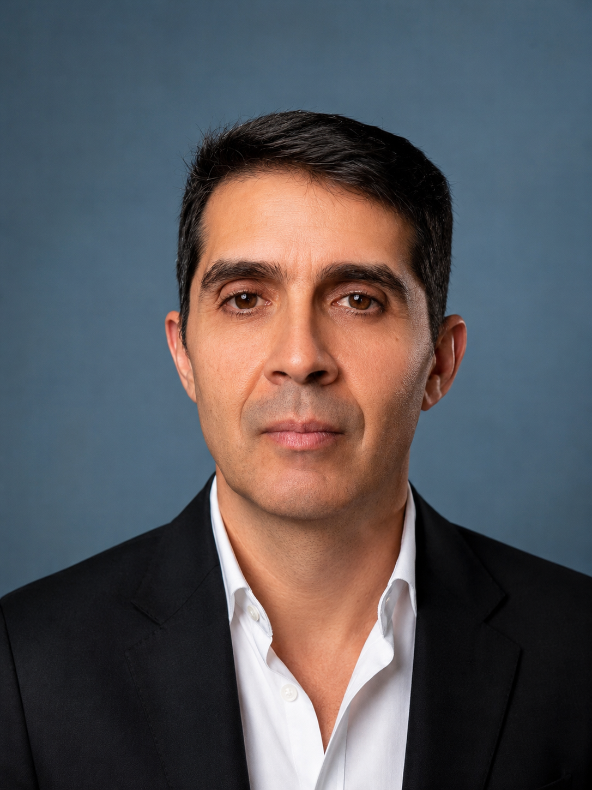
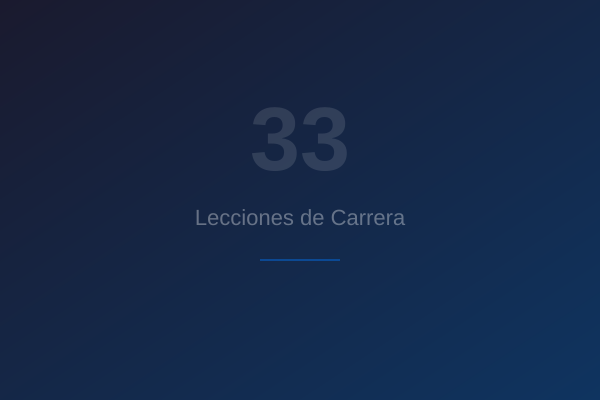
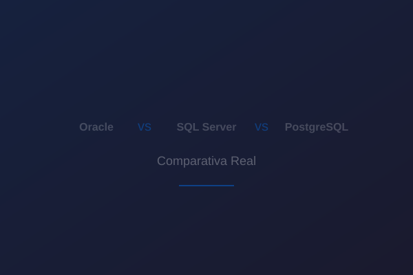
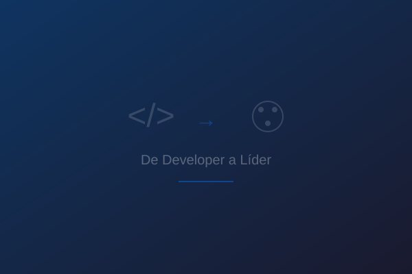

Nombre: Kerwin Alexander Arias
Título: Ing. en Sistemas
Ubicación: Santiago, Chile
Email: kerwin.arias@gmail.com
Teléfono: +56 9 4539 5886
Competencias Técnicas
Sobre Mí
Senior Software Developer con más de 35 años de experiencia profesional, incluyendo 14+ años en el sector healthtech diseñando y manteniendo plataformas de Historial Médico Electrónico (EMR) utilizadas por miles de profesionales clínicos en Estados Unidos.
Actualmente arquitectando microservicios basados en FHIR con GraphQL, liderando integraciones con sistemas de terceros y automatizando pipelines de datos clínicos con PowerShell y SQL Server en Modernizing Medicine. Experiencia profunda en .NET/C#, arquitectura de bases de datos clínicas e integración HL7/FHIR.
A lo largo de mi carrera he liderado equipos de desarrollo, gestionado proyectos de gran envergadura para clientes como PDVSA, CITGO, Banco Central de Venezuela y Modernizing Medicine, y he sido responsable del ciclo completo de desarrollo — desde la planificación y diseño hasta la implementación final.
Actualmente resido en Chile, donde trabajo 100% remoto con EE.UU. Inglés profesional nivel C1, con comunicación diaria en entorno corporativo. Foco permanente en interoperabilidad, cumplimiento HIPAA e impacto medible en flujos de trabajo de salud.
0
AÑOS DE EXPERIENCIA0
USUARIOS IMPACTADOS0
EMPRESAS0
TÍTULOS ACADÉMICOSExperiencia Profesional
Más de tres décadas construyendo soluciones tecnológicas de alto impacto.
Senior Software Engineer
Modernizing MedicineArquitectura y desarrollo de microservicios basados en FHIR con GraphQL para la plataforma EMR gGastro, utilizada por más de 14.000 especialistas en EE.UU. Integración de plataformas clínicas de terceros (Klara, mmPay) con REST APIs y FHIR. Automatización de pipelines de datos con PowerShell y SQL Server. Cumplimiento HIPAA en todas las etapas.
Software Engineer
GmedDesarrollo de funcionalidades del sistema EMR gCare orientado a la gestión de historias clínicas electrónicas, usando C#, .NET y PL-SQL sobre SQL Server. Optimización de consultas SQL en bases de datos clínicas de alto volumen, mejorando el rendimiento de reportes en un 40%.
Project Manager / Tech Lead
C.T.P. – GmedLiderazgo de un equipo de 6 desarrolladores en el ciclo completo de desarrollo. Diseño de modelos de bases de datos relacionales para aplicaciones clínicas e interfaces de usuario en .NET/C#. Reducción del tiempo de entrega de funcionalidades en un 25% mediante estandarización de procesos y adopción de metodologías ágiles.
Development Manager
Visión Grupo Consultores C.A.Gestión del desarrollo de las plataformas Strategos, Satec y Vernier, sistemas empresariales de planificación estratégica y control de gestión. Consultor señor para el Banco Central de Venezuela y Fondafa.
Arquitectura de soluciones web con Java (JSP, J2EE, Hibernate, Struts) con backends en SQL Server, Oracle y PostgreSQL. Productos: Strategos® (Balanced Scorecard — +1000 licencias), RADAR®.
Clientes: PDVSA, CITGO, Electricidad de Caracas, ENELBAR, Royal & Sunalliance, Movilnet, Ministerio de Defensa, entre otros.
Analista de Sistemas
Electricidad de Caracas C.A.Desarrollo de sistemas de soporte de decisiones empleando técnicas Delphi, Bayesiano y AHP. Desarrollo del sistema DataWarehouse con herramientas de Oracle (Express Objects, Administrador, Analyser) y PL-SQL.
Analista Programador
PDVSA BITORSupervisión de personal de desarrollo. Desarrollo de sistemas administrativos y financieros con Visual Basic, Access y Oracle PL-SQL.
Analista Programador
Archicentro Sistemas C.A.Desarrollo de sistemas para organismos bancarios. Líder de proyecto para la automatización de registro del Banco Provincial.
Analista Programador
King Ocean Service de Venezuela C.A.Desarrollo de sistemas administrativos y financieros utilizando Unís, dBase, Clipper, Basic y FoxPro.
Formación Académica
Preparación continua como base del crecimiento profesional.
Ingeniero en Sistemas
Universidad Alejandro Humboldt
Egresado 2010Licenciado en Administración (Mención Informática)
Universidad Simón Rodríguez
Egresado 2001Postgrado: Gerencia en Tecnología
Universidad Santa María
Egresado 1998Técnico Superior en Informática
Instituto Universitario de Venezuela
Egresado 1993Tecnologías & Herramientas
Certificaciones & Formación Continua
Idiomas
Proyectos Clave
Proyectos de alto impacto que demuestran experiencia en arquitectura, liderazgo técnico y entrega de soluciones en healthtech.
gPM — Módulo de Gestión de Consultorios
Modernizing MedicineDesarrollador y mantenedor principal de gPM (Practice Management), uno de los módulos core de la plataforma EMR gGastro, que gestiona agendamiento, facturación y flujos de trabajo clínicos para miles de consultorios especializados en EE.UU.
Modernización a Microservicios
Modernizing MedicineLideré la migración completa de servicios monolíticos legados hacia una arquitectura moderna de microservicios con FHIR, GraphQL y REST APIs, mejorando significativamente la escalabilidad y mantenibilidad del sistema.
Módulo de Estados de Cuenta
Modernizing MedicineDesarrollé y desplegué el módulo de Statements desde cero, gestionando el rollout completo hacia todos los consultorios clientes, incluyendo diseño, pruebas y despliegue en producción en toda la base de clientes.
Integración de Plataformas Clínicas
Modernizing MedicineLideré la integración end-to-end de Klara Balance (comunicación con pacientes) y mmPay (procesamiento de pagos) a través de arquitectura de microservicios con FHIR, REST APIs y GraphQL, habilitando el intercambio de datos en todo el ecosistema clínico.
Blog
Reflexiones, lecciones y experiencias de más de tres décadas en healthtech y desarrollo de software.

Carrera10 Lecciones que Aprendí en 35 Años de Desarrollo de Software
De dBase a microservicios FHIR, de waterfalls a agile — las verdades que solo el tiempo te enseña en esta industria.
Leer más
TécnicoOracle vs SQL Server vs PostgreSQL: Mi Experiencia Real con los Tres
Después de trabajar profesionalmente con estos tres motores, comparto en qué destaca cada uno y cuándo elegir cada opción.
Leer más
LiderazgoDe Programador a Gerente: Cómo Liderar sin Perder lo Técnico
La transición de escribir código a dirigir equipos es un camino lleno de errores. Aquí comparto cómo lo navegué.
Leer másEnvíame un Mensaje
Información de Contacto
Si deseas conversar sobre desarrollo de software, arquitectura de datos, consultoría técnica o cualquier oportunidad de colaboración, no dudes en contactarme.
- kerwin.arias@gmail.com
- +56 9 4539 5886
- Santiago, Chile